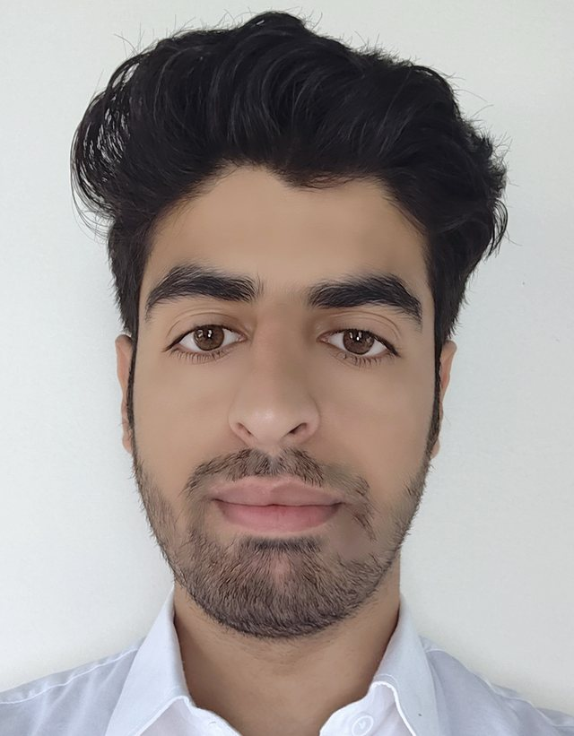

M.Tech, Computer Science & Engineering · NIT Srinagar
Malik Tafheem
Ul Islam
I study how to evaluate generative and multimodal models: rule and instruction following in video generation and editing, multimodal reasoning, and VLM-as-judge evaluation. Research Assistant at the GAASH Lab, NIT Srinagar.
Seeking a PhD position, Fall 2027

§ 0News
- Revised our survey on intent-based networking and agentic AI, and resubmitted it to Telecommunication Systems (Springer).
- Ranked 7th of 38 teams in the KATHE 2026 shared task on English-to-Kashmiri machine translation (with Iram Naseer).
- Joined the GAASH Lab, NIT Srinagar, as a Research Assistant, working on video generation.
- Started the M.Tech in Computer Science and Engineering at NIT Srinagar (GATE DA 2025, All India Rank 1388).
§ 1Research
A model can look right and still be wrong.
A generated video can be realistic and still break the rule it was asked to follow. My work builds evaluations that check meaning, not only surface quality.
At the GAASH Lab I build reproducible inference and evaluation pipelines for open video generation and editing models. I also build multimodal evaluation workflows that combine vision-language-model judges with human review, and study reasoning and instruction following in these models.
For my PhD I want to measure these failures reliably, and then find methods that reduce them.
§ 2Publications
& manuscripts
& manuscripts
Intent-Based Networking and Agentic AI for Next-Generation Network Control: A Systematic Survey, Taxonomy, and Research Agenda
§ 3Projects
KATHE 2026: English-to-Kashmiri Machine Translation
We fine-tuned IndicTrans2 (1.1B) to translate English into Kashmiri in the Perso-Arabic script, with a public-leaderboard score of 13.90 (√(BLEU × chrF++)). We also fixed a preprocessing error in IndicTrans2 that deleted Arabic short-vowel marks from Kashmiri text.
Anti-drone detection and tracking
Trained YOLOv5/v7/v8 and YOLO-NAS detectors on visible-light and infrared drone data (about 90% mAP), with SORT and DeepSORT for real-time multi-object tracking. Field-tested with a smartphone camera.
Image colorization with conditional GANs
A conditional GAN with a U-Net/ResNet-18 generator that predicts color channels in Lab space, trained on about 10,000 COCO images with L1 and adversarial losses.
House price prediction
Exploratory analysis and feature engineering; an MLP regressor with R² = 0.921 on a 30% test split, served through a Streamlit interface.
Web of Knowledge
A bibliographic database built on AVL trees, linked lists, and graphs, with publication and co-author queries and graph-distance search.
§ 4Experience
- Dec 2025 – nowResearch Assistant, GAASH Lab, NIT SrinagarVideo generation and editing models: inference and evaluation pipelines, multimodal evaluation.
- Dec 2025 – Feb 2026Research Intern, IIT Roorkee, Dept. of Electrical EngineeringWith Dr. Abdul Saleem Mir. Replicated the T2I-CompBench++ benchmark for compositional text-to-image generation; ran chain-of-thought and self-consistency prompting on open models.
- Sep 2025 – nowLab Assistant, NIT SrinagarPython Programming, Artificial Intelligence, and Network & Security labs.
- Jul 2024 – Jan 2025Machine Learning Engineer, freelanceImage classification with CNNs; clustering with PCA and K-means.
- Apr 2023 – Jun 2024Research Assistant, SAVe Lab, NUSTImage segmentation for collision avoidance in surgical robots (NSGA-II in Java; U-Net, DeepLab, Mask R-CNN).
- May – Nov 2023Software Engineering Intern, Bitnine Global (remote)C/C++ utilities for AgensSQL: LDAP synchronization and data loading.
- Jun 2021 – May 2022Research Assistant, TUKL-NUST R&D CenterFish detection and tracking with YOLO and ByteTrack; dataset annotation.
- May – Jun 2021Machine Learning Intern, Smartup TechnologiesLogistic regression and SVM for ride matching (82% accuracy).
§ 5Education
M.Tech, Computer Science and Engineering
CGPA 9.18/10 after two semesters. A+ in Machine Learning, Advanced Algorithms, Introduction to Data Science, and AI & Fuzzy Logic.
BS, Computer Science
CGPA 3.64/4.00, rank 16 of 117. Merit-based scholarship.